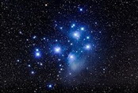

|  | LAstroNomer | |
|---|---|---|
| / | / | / |
| Биография | Учеба | Хобби | Фото | Полезные ссылки |
С 2006 по 2014 года занимался шахматами. Имеет много различных грамот и дипломов различного уровня. Является призером среди юношей 2000-2001 г.р. за 2009 и 2010 года. В 2009 году был участником Финала, проходившим в городе Кострома.
С 2015 года увлекся олимпиадным движение по астрономии и химии. Победитель областных соревнований 2016-17 и 2017-18. Оба раза прошел на заключительный этап, но по причине тупости ничего не занял.
В октябре 2016 года участвовал в инженерно-конструкторской школе "Лифт в будущее" —диплом 3-й степени.
Призер Санкт-Петербуржской Астрономической олимпиады 2016 и 2017 годов— диплом 3-й степени, а также 2018— диплом 2-й степени.
Призер Московской Астрономической олимпиады 2018.
Является призером и победителем конкурсов "Кенгуру"; "Русский Медвежонок"; "Филологический чемпионат по биологии" разных лет.
Сканы грамот и дипломов находятся в разделе "Фото" или Полезные ссылки